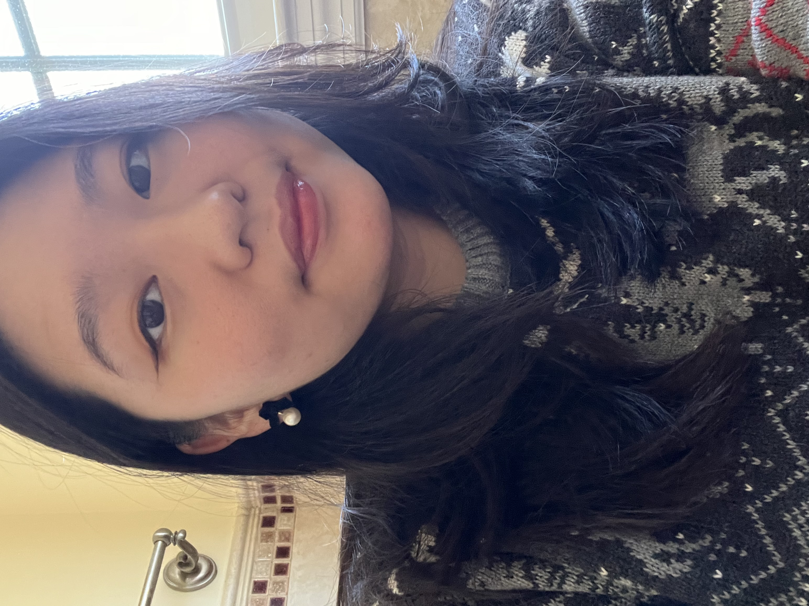

About Me
Hello hello!
I’m Cecilia, a UI/UX designer with a background in Psychology and Behavioural Economics. I love to talk to people, listen to their stories, and be a person who could make an impact on their journey in life. Connection and empathy are what I enjoy about being a UX designer.
My interests in human interactions and psychology drives my motivation to understand users' needs, desires, and pain points. Finding effective and intuitive solutions is what I would like to do for people!
As a foodie, I love to go tos different restaurants, bakeries, and coffee shops to explore different flavours to expand my gustatory palette. While I love to cook and bake for others, I am not very good at it... But I like to read recipe books, cooking tips, and baking tricks to improve my culinary skills!
Contact Information
- Email: cc3875@drexel.edu
- GitHub: https://github.com/CeciliaxChen
- LinkedIn: https://www.linkedin.com/in/ceciliaxchen/